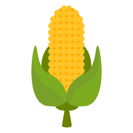
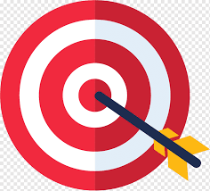
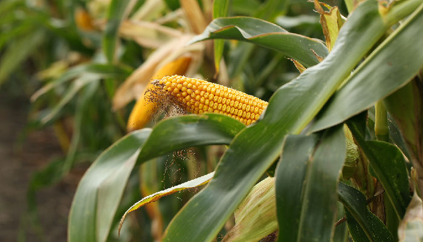

Sobre o Milho

O milho é uma das culturas mais importantes globalmente, desempenhando um papel vital na segurança alimentar,
na economia agrícola e na indústria em geral.
No entanto, como em muitas áreas da agricultura, há uma série de desafios enfrentados pelos produtores de milho,
assim como contribuições significativas para diversos setores.
Desafios

Mudanças Climáticas: O clima imprevisível e extremo representa uma ameaça significativa para as safras de milho. Secas, inundações e temperaturas extremas podem reduzir drasticamente os rendimentos e aumentar os custos de produção.
Pestes e Doenças: Insetos, fungos e outras doenças representam uma constante ameaça às plantações de milho. O controle dessas pragas pode exigir o uso de pesticidas que podem ser prejudiciais ao meio ambiente e à saúde humana.
Escassez de Água: O milho é uma cultura que demanda uma quantidade substancial de água para crescer, e a escassez de recursos hídricos em certas regiões pode limitar a produção.
Erosão do Solo: O cultivo intensivo de milho pode levar à erosão do solo, especialmente em áreas onde práticas de conservação não são implementadas adequadamente. Isso pode resultar na perda de nutrientes do solo e na degradação do ambiente.
Preços Voláteis: Os preços do milho podem ser altamente voláteis devido a uma série de fatores, incluindo condições climáticas, oferta e demanda global, políticas governamentais e flutuações cambiais. Isso pode representar um desafio para os agricultores na gestão de seus negócios.
Contribuição

Segurança Alimentar: O milho é uma fonte fundamental de alimento para humanos e animais em todo o mundo. Ele fornece carboidratos, proteínas, fibras e uma variedade de vitaminas e minerais essenciais para uma dieta saudável.
Biocombustíveis: O milho é uma importante matéria-prima na produção de biocombustíveis, como etanol. O uso de etanol de milho como combustível alternativo pode reduzir a dependência de combustíveis fósseis e ajudar a mitigar as emissões de gases de efeito estufa.
Indústria Animal: O milho é amplamente utilizado na produção de ração animal, fornecendo energia e nutrientes essenciais para o gado, suínos e aves.
Economia Rural: A produção de milho é uma fonte crucial de renda para milhões de agricultores em todo o mundo, especialmente em áreas rurais. Além disso, a cadeia de valor do milho, incluindo processamento, distribuição e comercialização, gera empregos e impulsiona o desenvolvimento econômico em muitas regiões.
Diversidade Genética: O milho possui uma vasta diversidade genética, o que o torna uma importante fonte de genes para melhoramento de culturas. Isso é essencial para desenvolver variedades mais resistentes a condições adversas, mais nutritivas e mais adaptadas às necessidades locais.
Relogio
Tempo restante
7
dias
7
horas
7
min
7
seg